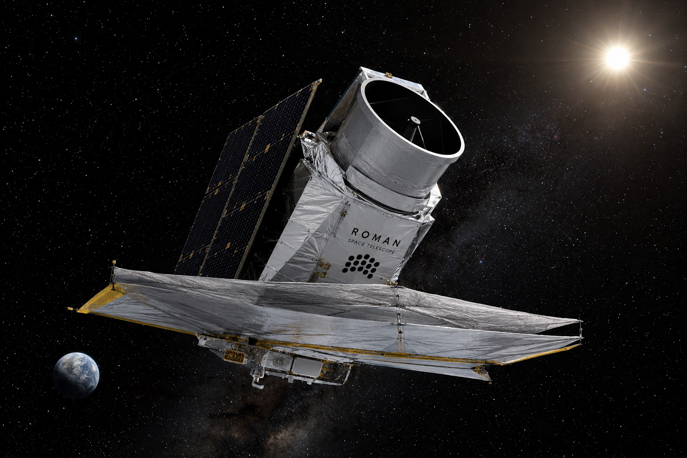
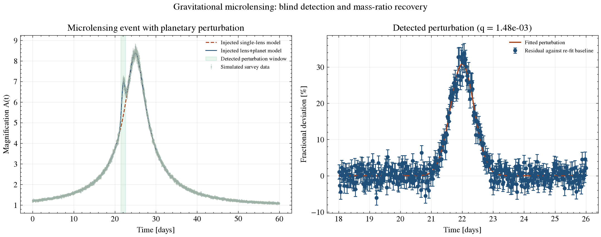

Exoplanet Detection Methods · Gravitational Microlensing
The only method sensitive to planets at wide separations, low-mass planets around faint or distant stars, and free-floating planets with no host star at all: a foreground star's gravity briefly bends and magnifies the light of a background star it passes in front of. This page derives the Einstein-radius and magnification physics from first principles, works through real numbers, reports current detection statistics, and includes a live calculator built on the same equations.
General relativity says mass curves spacetime, and light follows that curvature. When a foreground "lens" star passes close to our line of sight to a background "source" star, it bends the source's light into two separate images too close together to resolve individually — instead we observe their combined, magnified brightness. The characteristic angular scale of this bending is the Einstein radius:
θE = √[ (4GML/c²) · (1/DL − 1/DS) ]
where ML is the lens mass and DL, DS are the observer-lens and observer-source distances. For a typical Galactic lens this works out to roughly a milliarcsecond — far too small to resolve directly with any telescope, which is exactly why microlensing is detected purely through the brightness change over time, not by imaging anything. Notice the equation requires DS > DL: the source must sit farther away than the lens for the geometry to produce lensing at all.
For a single point-mass lens, the total magnification as a function of the source-lens angular separation u (measured in units of θE) is:
A(u) = (u² + 2) / [u · √(u² + 4)]
u(t) = √[ u₀² + ((t − t₀)/tE)² ]
u₀ is the minimum impact parameter (how close the alignment gets, in Einstein radii), t₀ is the time of closest approach, and tE = θE/μrel is the Einstein-radius crossing time — the lens-source relative proper motion sets how long the whole event takes, typically days to weeks for stars toward the Galactic bulge. Setting u₀→0 shows the magnification formally diverges for a true point source passing exactly behind the lens; real events are capped by the source star's own finite angular size (a "finite-source effect"), which becomes important precisely during the sharpest, most informative part of a planetary perturbation.
If the lens star hosts a planet, the planet's own much smaller gravitational field perturbs the light bending near its position, producing a brief deviation from the smooth single-lens curve above — sometimes a spike, sometimes a dip, depending on the source's trajectory relative to the planet's caustic (a curve in the source plane where magnification formally diverges for a point source). The perturbation's characteristic duration scales with the star-planet mass ratio q = Mp/M★ roughly as:
tpert ~ tE · √q
(Mao & Paczynski 1991; Gould & Loeb 1992). The perturbation's amplitude is more sensitive to details — source trajectory, caustic topology, and how close the source passes to the planet's caustic all matter — so δA/A ~ √q is a rough, order-of-magnitude scaling rather than a fixed relationship. What's robust is the duration scaling: even a Jupiter-Sun mass ratio of order 10⁻³ gives a perturbation lasting only ~√q ≈ 3% of the main event's duration — hours out of weeks — which is why real microlensing surveys need high-cadence, round-the-clock coverage from multiple longitudes to catch planetary signals at all.
Microlensing needs no light at all from the planet — it works through gravity alone, which makes it the only method capable of finding truly free-floating, unbound planets with no detectable host star whatsoever. Its sensitivity also peaks for planets a few Einstein radii from their star, roughly the "cold" region beyond a system's ice line that transit photometry (which needs a close-in, edge-on-aligned orbit) and radial velocity (whose signal weakens sharply at wide separation and long period) both struggle to probe. That makes microlensing the leading method for finding low-mass planets at Jupiter-to-Neptune-like separations around typical, often faint and distant, Milky Way stars — a demographic essentially invisible to the other two methods.
The cost of that reach: every microlensing event is a one-time, non-repeating alignment between three objects (observer, lens, source). Once it's over, it's over — the lens star usually can't be reobserved or characterized in detail afterward, unlike a transiting or RV-detected planet whose host keeps orbiting and can be revisited indefinitely.
The first cold super-Earth found by microlensing (Beaulieu et al. 2006) gives a real mass ratio to check the scaling relation against. Its published planet and host-star masses: 5.5 Earth masses, orbiting a ~0.22 Solar-mass M dwarf.
Mp = 5.5 × 5.972×10²⁴ kg = 3.285×10²⁵ kg
Mstar = 0.22 × 1.989×10³⁰ kg = 4.376×10²⁹ kg
q = Mp / Mstar = 7.5×10⁻⁵A mass ratio of order 10⁻⁴-10⁻⁵ like this one predicts, via tpert ~ tE√q, a perturbation lasting only about 1% of the event's total Einstein time — for a typical bulge event with tE of a few weeks, that's a perturbation measured in hours, exactly why real microlensing planet searches need continuous, high-cadence monitoring from multiple longitudes. OGLE, MOA, and KMTNet operate telescopes spread across the globe partly for this reason: a few-hour anomaly is easy to miss entirely from a single site with one clear-weather window per night.
For a lens star of 0.3 Solar masses at 6 kpc, lensing a source star at 8 kpc (typical bulge-lensing-bulge geometry), with a relative proper motion of 4 mas/yr:
θE ≈ 0.32 mas
tE = θE / μrel = 0.32 mas / 4 mas/yr ≈ 29 daysThis is squarely in the observed range for real bulge microlensing events (typically days to a couple of months), and matches this repo's own simulated event, which uses an injected tE of 20 days.
Move the sliders below. The outputs are computed live, directly from the Einstein-radius, magnification, and perturbation-scaling equations in Sections 1-3 — nothing here is looked up or pre-baked.
θE uses the Einstein-radius formula from Section 1 (requires source distance greater than lens distance). tE = θE/μrel. Peak magnification uses A(u) from Section 2 at u=u₀. Perturbation duration uses tpert ~ tE√q from Section 3 — an order-of-magnitude scaling relation, not an exact binary-lens computation (see Section 9).
Pulled live from the NASA Exoplanet Archive's confirmed-planet counts by discovery method, accessed 2026-08-14:
Microlensing is the third most productive detection method by count, but a disproportionately important one for demographics the other methods can't reach: it is the leading method for cold, wide-separation planets around typical Milky Way stars and the only method that has found free-floating planets with no bound host at all. Ground-based surveys OGLE, MOA, and KMTNet monitor hundreds of millions of bulge stars every clear night looking for these events, and NASA's Roman Space Telescope (targeting launch by 30 August 2026) is purpose-built to run a large-scale space-based microlensing survey with far better cadence and photometric precision than any ground-based network can achieve — expected to substantially increase this method's share of the total census over the coming decade.

AI-generated illustration of NASA's Roman Space Telescope, purpose-built for the large-scale space-based microlensing survey described above. Not an official mission photograph — see NASA/Roman for real imagery.

scripts/microlensing_demo.py: a point-source point-lens (PSPL) fit, blind perturbation-window detection on the residuals, and mass-ratio recovery from an injected planetary signal. See Section 8.This repository builds a simulated light curve, then detects and characterizes the planetary signal in it without any step of the analysis referencing the values used to generate it:
The result from this repo's own run:
| Quantity | Injected | Recovered | Error |
|---|---|---|---|
| Perturbation window | centered at 22.0 days | detected at [21.48, 22.60] days | — |
| Einstein time (tE) | 20.0 days | 20.010 days | 0.05% |
| Mass ratio (q) | 1.50×10⁻³ | 1.48×10⁻³ | 1.07% |
Run it yourself: pip install -r requirements.txt && python scripts/microlensing_demo.py. Tests in tests/test_microlensing.py verify the PSPL formula against its closed-form solution and check the blind perturbation detector on synthetic residuals it hasn't seen the injection parameters for — including that pure noise with no injected bump correctly returns no detection. Runs automatically on every push via GitHub Actions.
This repo's planetary-perturbation model uses the scaling relations for characteristic amplitude and duration from Section 3, not a full binary-lens computation, which requires solving a 5th-order complex polynomial for image positions via inverse ray-shooting or contour integration. This is a standard back-of-the-envelope approach for a rough mass-ratio estimate, but a published microlensing planet detection fits the full binary-lens light curve in detail — which is also needed to break the mass-distance degeneracy mentioned in Section 4. The detection step here also uses a simple sigma-threshold flag on a single light curve; real surveys combine detection statistics across a network of telescopes and correct for finite-source effects near the caustic, neither of which this simulation models.
More fundamentally: because every event is a one-time alignment, planet parameters derived from it carry real, often irreducible degeneracies — particularly between the lens system's distance and total mass — that typically need additional follow-up, such as high-resolution imaging years later once the lens and source have visibly separated on the sky, to fully resolve.
A natural next step beyond this repo's scaling-relation approximation: implement the full binary-lens magnification map, or use an existing package such as MulensModel or pyLIMA, both of which implement real binary-lens fitting used in published microlensing papers, and fit this repo's simulated light curve with one of them to see how much the mass-ratio estimate changes.